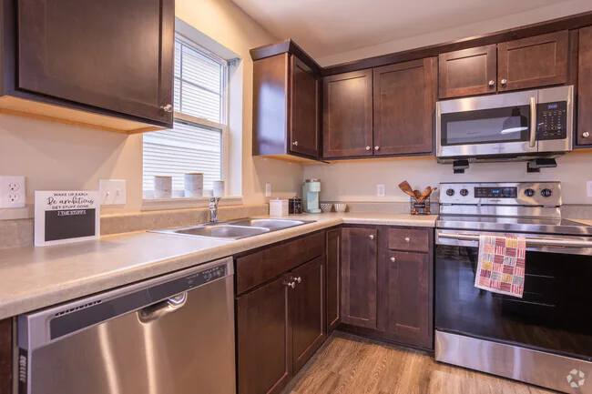
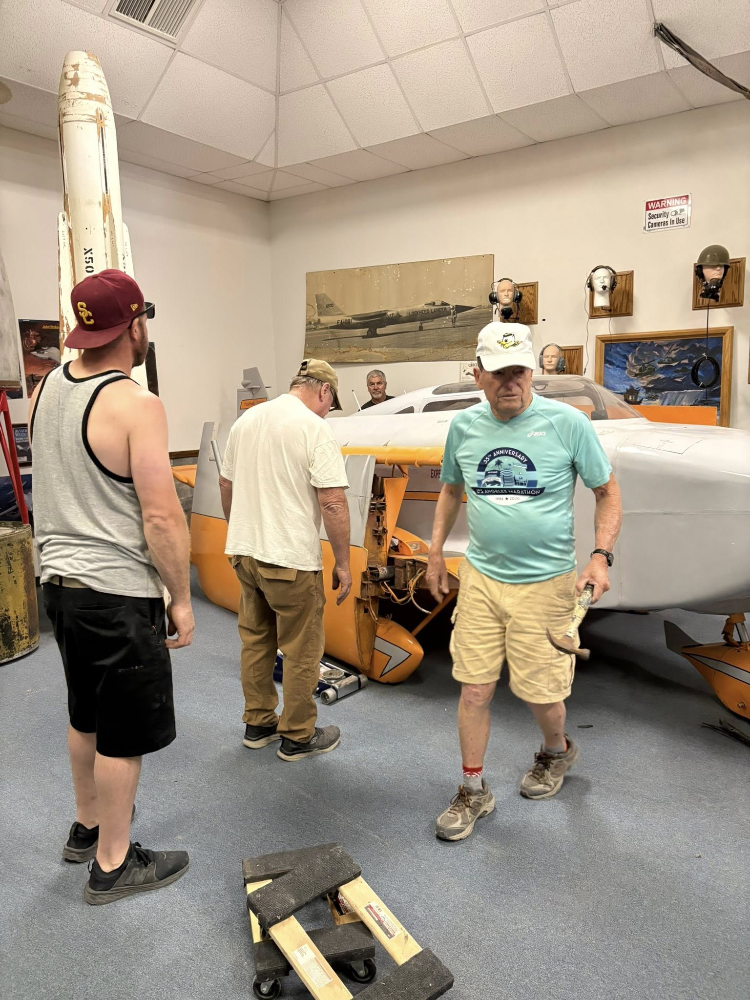
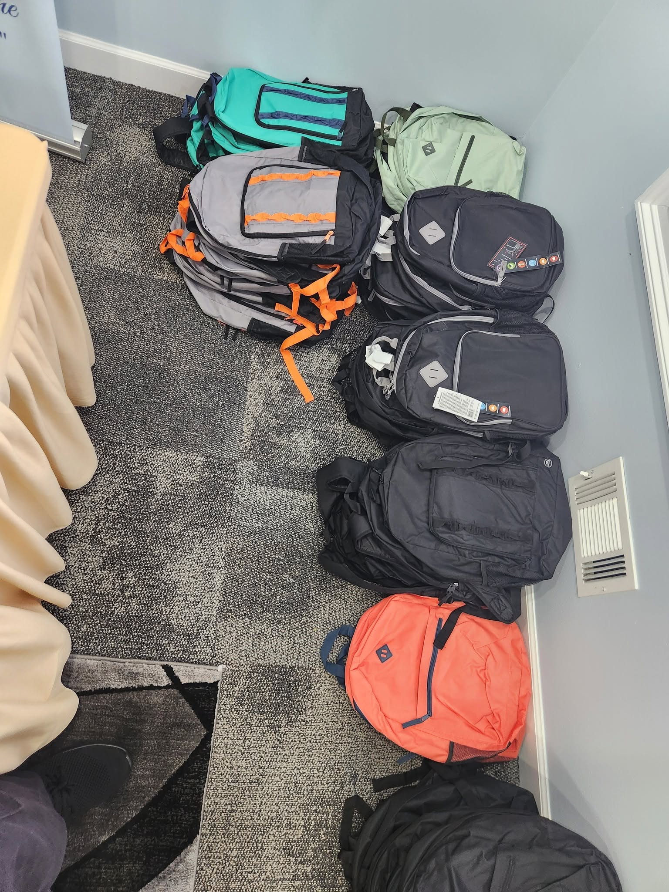

1. Listen and plan
We identify community needs, set a responsible scope and determine how the organization can help.
Lutheran Confessional Church Pakistan Incorporated X develops community-centered programs that support education, outreach, volunteer service and public benefit work.
A clear process helps keep nonprofit work organized and accountable.

We identify community needs, set a responsible scope and determine how the organization can help.

Programs are carried out with volunteer support, clear communication and attention to public benefit.

We retain records, review outcomes and improve future activities based on what was learned.